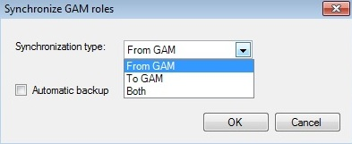

Through this option GAM synchronization roles can be forced. 
From GAM: Roles in GAM are added in the IDE. To GAM: Roles added by the IDE are added in GAM. Both: Both actions From GAM and To GAM.
Then you can back up before the synchronization. See here for more information.
|
| Backlinks | |
| GeneXus Business Process Modeler Tools | GXflow - GAM Integration |